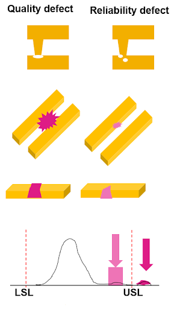
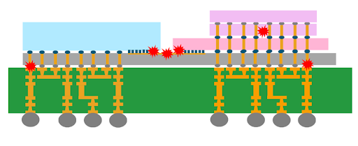

This article is based on a paper presented at SEMICON Japan 2022.
By Shinji Hioki, Strategic Business Development Director, Advantest America
Moore’s Law has provided the semiconductor industry’s marching orders for device advancement over the past five decades. Chipmakers were successful in continually finding ways to shrink the transistor, which enabled fitting more circuits into a smaller space while keeping costs down. Today, however, Moore’s Law is slowing as costs increase and traditional MOS transistor scaling have reached its practical limits.
The continued pursuit of deep-submicron feature sizes (5nm and smaller) requires investment in costly extreme-ultraviolet (EUV) lithography systems, which only the largest chip manufacturers can afford. Aside from lithography scaling, approaches for extending Moore’s Law include 3D stacking of transistors; backside power delivery, which moves power and ground to the back of the wafer, eliminating the need to share interconnect spaces between signal and power/ground lines on the wafer frontside; and heterogeneous integration via 2.5D/3D packaging with the fast-growing chiplets. All these new constructs have been formulated to enable the integration of more content into the package.
With these new approaches come heightened package density and stress and much lower defect tolerances. Tiny particles that were once acceptable can now become killer defects, while tighter packing of functionality in these advanced packages creates more thermomechanical stresses. In particular, memory devices cannot tolerate high heat, as the data they hold can be negatively impacted. Large providers of data centers need to prevent silent data corruption – changes in data that can result in dangerous errors, as there is no clear indication of why the data becomes incorrect. Meanwhile, in the automotive space, device volume and density have exploded. Where cars once contained around 50 semiconductors, today the average car packs as many as 1,400 ICs controlling everything from the airbags to the engine.
Quality and reliability assurance test
All of this points to the fact that assuring quality and reliability has become a key challenge for semiconductors. Quality and reliability (Q&R), both essential, are two separate concerns – does the semiconductor work in the long term as well as the short term? Quality assurance, in the short term, has traditionally relied on functional, structured, and parametric tests. The test engineer measured a range of parameters (voltage, current, timing, etc.) to achieve datasheet compliance and a simple pass – the device worked when tested.
However, the spec compliance test wasn’t enough to assure the reliability of the part – that it would work and continue working over several years’ use in the end product. To assure reliability, semiconductor makers usually apply accelerated electrical, thermal, and mechanical stress tests and inspection, utilizing statistical data analysis on the results to flag outliers that are suspected as potential reliability defects. (See Figure 1.) As the complexity increases, the difficulty of screening unreliable units continues to mount.
Figure 1. Quality and reliability defects are very different in form, nature, and tolerance limitations (LSL = lower specification limits; USL = upper specification limits). Reliability assurance is growing increasingly difficult in the face of heightened package complexity.
The problem with implementing simple statistics to perform reliability testing is that, while obvious outliers will be detected, it’s much more difficult to detect devices that may fail over time and prevent RMAs (Return Material Authorizations), especially in automotive and other mission-critical applications. Once a system fails in the field, engineers are under pressure to analyze the root cause and implement corrective actions. In an example presented at SEMICON West 2022, Galaxy Semiconductor illustrated how tightening test limits to catch more failures takes a significant toll on yield. Very aggressive dynamic part average testing (DPAT) caught just one failure out of 50 RMA units and caused 12.6% of the good units to be lost. Introducing a machine learning (ML)-based model, however, produced far better results. In the same example, utilizing ML-based technologies enabled 44 out of the 50 RMA failures to be detected, with a yield loss of just 2.4%.
ML + test = enhanced Q&R assurance
Computing power for artificial intelligence (AI) is rising quickly. Well-known R&D firm OpenAI has reported that the computational power for AI model training has doubled every 3.4 months since 2012 when companies like Nvidia began producing highly advanced GPUs, and data-intensive companies like Google came out with their own AI accelerators. These advancements sped AI learning’s computing power. By projecting these advancements into semiconductor test, we know that applying AI and ML technologies to the test function will enable test systems to be smarter so that they learn how to identify more defects – and more types of defects – with more in-depth analysis.
Today’s smaller geometries and increased device complexity require more AI/ML power to enhance data analytics. Data analysis used to be done in the cloud or on an on-premise server. The tester would send data to the cloud or server and wait for the analysis results to judge defects, losing a full second of test time or more – a large deficit in high-volume manufacturing operations. Edge computing, on the other hand, takes only milliseconds, delivering a huge benefit in test time savings.
To fully utilize ML technology, we developed a solution to pair our leading-edge testers with ACS Edge™, our high-performance, highly secure edge compute and analytics solution. The ACS real-time data infrastructure enables a full cycle of ML model deployment, real-time defect screening using the ML model, and ongoing retraining of the model to ensure sustained learning. The ML function speeds the detection of outliers, with ACS Edge immediately providing feedback to the tester. Figure 2 illustrates this cycle.
Figure 2. The ML model development retraining cycle feeds data into ACS EdgeTM, which communicates with the V93000 for concurrent test and data analysis.
On-chip sensors for silicon lifecycle management
Another technology in development that many in the industry are excited to see come to fruition is silicon lifecycle management (SLM) to predict and optimize device reliability even more efficiently. Large wafer foundries produce terabytes of data per day – but less than 20% of this large volume of data is useful, which poses a challenge for reliability screening. The SLM concept involves purposefully designing die to produce meaningful high-value data during manufacturing by embedding tiny sensors on the die to measure a variety of local parameters – temperature, voltage, frequency, etc. – with DFT logic to monitor and assess die behavior at every stage. Smart ML models then use the data generated by the on-chip sensors to detect early signs of reliability degradation. If a particular section of a die exhibits a huge temperature spike, for example, it may signal that the unexpected leakage is happening due to some physical reasons (for example, die cracking or bridging) and will fail at some point if not fixed. This technique enables addressing problems much earlier to prevent potentially catastrophic defects.
With SLM-focused sensor monitoring, more thorough reliability testing can occur at every phase, from the wafer and package level to system-level test and field applications. An automotive board outfitted with these on-chip sensors can detect abnormalities faster and transmit this information to the automotive manufacturer for quicker diagnosis and resolution, e.g., notifying the owner to bring the car in for servicing.
Mechanical and thermal stresses are well-known challenges in 2.5D/3D packages, and on-chip sensors can greatly benefit this area. These sensors can help monitor and detect the early signature of degradation in known high-stress areas identified by simulation. As shown in Figure 3, in a package that has an organic substrate (green) topped with a silicon interposer (gray), the coefficient of thermal expansion (CTE) mismatch can create significant stress at the interface between the two materials, leading to warping, which can cause cracking of die-to-die connections (center red dots) and corner bumps (between grey and green). Heat dissipation in the middle of die stacking (3D stacking in pink) is another challenging area. By placing on-chip sensors near these stress points, the package can be monitored more effectively, and potential issues can be addressed before they become catastrophic.
Figure 3. Devices with on-chip sensors can automatically detect weak areas and stress points within 2.5D/3D packages, sending data to ML models for analysis and reliability screening.
Chiplet ecosystem challenges
The emerging chiplet ecosystem poses significant challenges for timely root cause analysis. With a 2.5D/3D package containing multiple die from different suppliers, it becomes crucial to identify the cause of low yield rates, especially if the yield drops from 80% to 20% after assembly. However, only 23% of vendors are willing to share their data, according to a 2019 Heterogeneous Integration Roadmap (HIR) survey, which delays the identification of the culprit die from a specific wafer lot. Additionally, not all small chips have the memory space to include a unique die ID, which further complicates the traceability of defects.
To address these challenges, it is essential to establish data feed-forward and feedback across the ecosystem. When the fab identifies an issue during in-line wafer inspection, it should feed forward the data for more intelligent electrical testing. The data generated during e-test is then fed back to the fab, creating a closed-loop system. By designing chiplets with heterogeneous integration in mind, it is possible to fully utilize fab data and enhance chiplet quality and reliability assurance. Ultimately, better collaboration and information sharing across the supply chain will enable faster root cause analysis and improved chiplet manufacturing.
Summary
In today’s semiconductor industry, the demand for smaller and more complex device designs has driven the development of 2.5D/3D packages and chiplets. These advancements have brought new challenges to traditional testing methods, requiring advanced technologies such as AI and ML to ensure reliable, high-quality products.
New approaches such as silicon lifecycle management (SLM) using on-chip sensors and machine learning for data analytics offer promising solutions for long-term reliability. While SLM is not yet widely implemented, a commitment to collaboration and data sharing across the chiplet supply chain ecosystem is crucial for success.
By utilizing AI and machine learning for test data gathering and analysis, significant benefits can be achieved, including enhanced quality and reliability assurance, cost reduction, and accelerated time-to-market for devices. Implementing these technologies must be a key consideration for chiplet design and testing moving forward.

